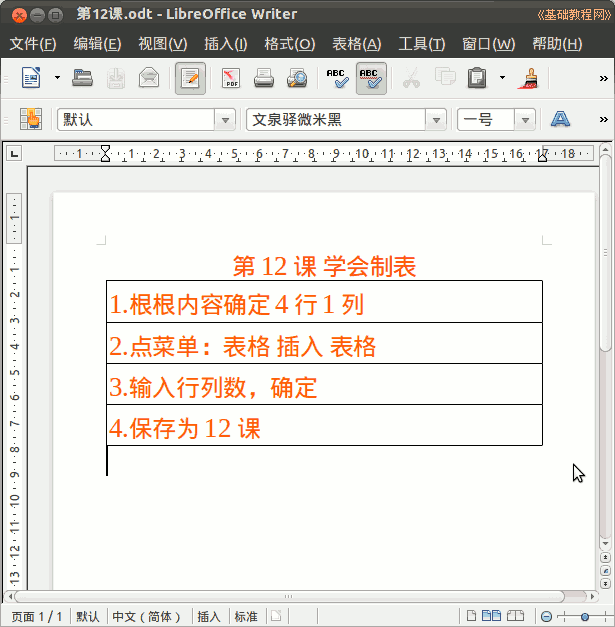

2011-2012 第二学期七年级文字处理和网页教学设计
作者：TeliuTe 来源：基础教程网
十二、学会制表 返回目录 下一课
（一）教学设计
1、学习目标：学会作表
2、注意事项：把内容放在表格里，先制表再输内容。
3、教学过程：
1）教师准备学案和板书；
2）学生整队进入，开机抄黑板上笔记；
3）教师讲解板书演示操作；
4）学生打指法、日志、完成操作；
5）教师打勾记录学生指法成绩，检查日志和操作；
注：学生抄完笔记就开始打指法、日志，老师讲完后再继续完成；
（二）板书设计(学生笔记)
第12课 学会制表
1、根据内容 确定__行，__列
2、点菜单：表格、插入、表格
3、输入行列数、确定
4、保存为第12课
操作图示：

（三）课后记
本来想着要不要一节课，还是接着上吧
不偷懒了，上课上得有些累的感受
--
要求学习绕弯，关键的地方要多注意
发现碰到的都是些小问题，不是多大困难的
--
把行和列空出来，让学生思考一下需要 几行几列
用黑板作例子，看看需要几列
--
italc还是老卡，开两次关才行
不知道是哪儿有问题，看着也没怎么占资源
--
要么就是fcitx显示的问题，关掉重新开一下
好像还是不行，显卡的问题难道
--
讲完内容，直接做表，然后把内容打到表格里
保存还有些问题，双击不过关，尽量用单击
--
有两个吃东西的，发现后先骂一顿然后让留下来做值日
有错误立刻解决，拖到后面不了了之，而且要对错误负责
--
返回目录 下一课
本教程由86团学校TeliuTe制作|著作权所有
基础教程网：http://teliute.org/
美丽的校园……
转载和引用本站内容，请保留版权信息和本站链接。